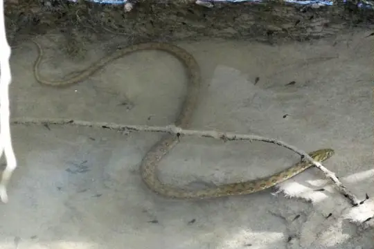
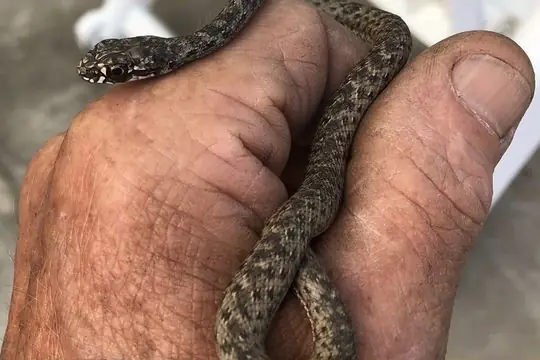
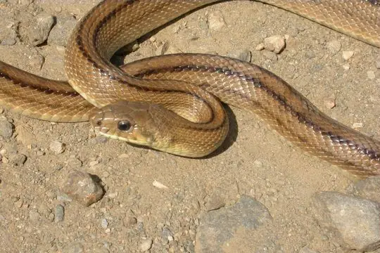
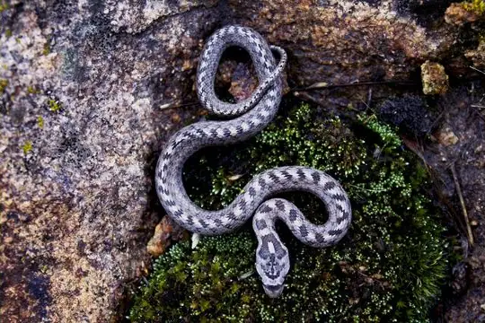
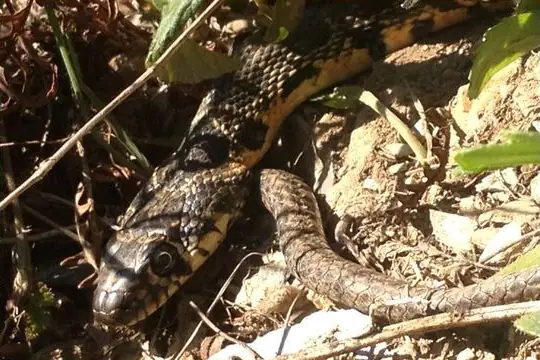
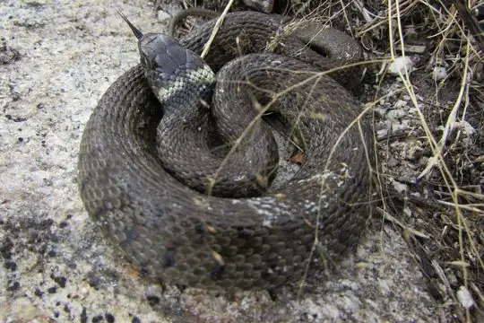
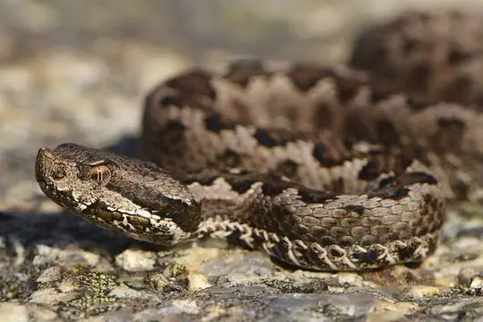

Snakes around Alicante
Alicante, Spain · 38.34°N, 0.48°W
Alicante is a city in Alicante, Spain. 7 snake species are recorded in Alicante in SnakeList.
- 7species
- 2venomous
- 5non-venomous
- 3families
These are the snakes of Alicante, not of Alicante itself. SnakeList records snakes by state or province, not by city, so this page lists the 7 species recorded anywhere in Alicante, the state or province Alicante is in (worked out from the city’s map position). Many of them may not live in or near the city.
Most widely recorded
The species here that have research-grade iNaturalist records in the most places across their whole range - not just in Alicante. That shows how often people have photographed them, not how many live here.

Viperine SnakeNatrix maura
Montpellier snakeMalpolon monspessulanus
Ladder SnakeZamenis scalaris
Southern Smooth SnakeCoronella girondica
Horseshoe Whip SnakeHemorrhois hippocrepis
Iberian Grass SnakeNatrix astreptophora
Lataste's ViperVipera latastei
Venomous and non-venomous
Venomous: 2Non-venomous: 5
1 is listed by SnakeList as dangerous to people: Lataste's Viper Vipera latastei.
The other venomous ones have mild venom: no serious bites to people are documented for them.
Snake families
Habitats (rough estimate)
How many of its living snakes have each kind of habitat in SnakeList’s estimate. That estimate comes from every country, state and province where each snake is recorded - not from a survey of Alicante, and not checked species by species.
Who described them
The scientists who first described its most widely recorded snakes, and when.
- Viperine Snake Natrix maura - described by Linnaeus in 1758 (under another genus name)
- Montpellier snake Malpolon monspessulanus -
- Ladder Snake Zamenis scalaris -
- Southern Smooth Snake Coronella girondica -
- Horseshoe Whip Snake Hemorrhois hippocrepis -
- Iberian Grass Snake Natrix astreptophora - described by Seoane in 1884 (under another genus name)
- Lataste's Viper Vipera latastei -
Names and dates come from SnakeList’s reviewed species accounts; the others are looked up on Wikidata (CC0) when this page opens.
Nearby cities
The closest cities in SnakeList’s city list, as the crow flies.
Other cities in Alicante
All 7 species of Alicante
- Horseshoe Whip Snake Hemorrhois hippocrepis
- Iberian Grass Snake Natrix astreptophora
- Ladder Snake Zamenis scalaris
- Lataste's Viper Vipera latastei venomous
- Montpellier snake Malpolon monspessulanus venomous
- Southern Smooth Snake Coronella girondica
- Viperine Snake Natrix maura
No snake here matches that.